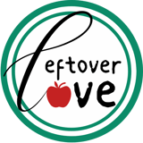
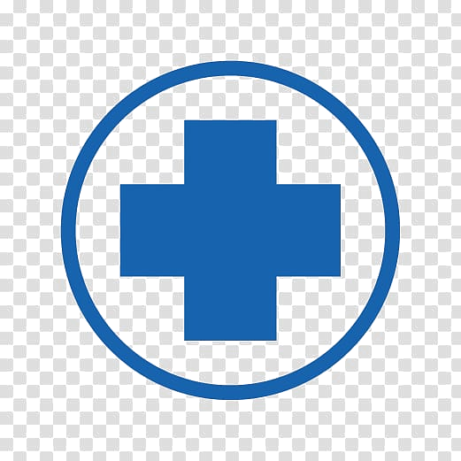

A little
about me
I just wrapped up my Master's in Business Analytics at the University of Maryland, on top of a Bachelor's in Computer Science and Engineering. I love working with numbers and businesses, turning data into decisions people can actually trust and act on. My experience ranges from nonprofits, startups, to Fortune 500 companies, so I've picked up a feel for how organizations of every size really run, across industries I'm genuinely into: tech, healthcare, retail, logistics, and food.
Outside of spreadsheets, I'm big on networking. Most recently I attended the Grace Hopper Celebration in Chicago, where I got to meet people from 100+ companies and sit in on a ton of great workshops. The energy was amazing, and it's honestly one of my favorite things to talk about.
Here's what I
bring to the table
Data analysis & BI
I turn raw, messy data into dashboards people actually open and use.
Machine learning & AI
I build models that predict what happens next — and can explain why.
Project management
I plan and run projects end-to-end, from scoping through delivery, keeping timelines and teams on track.
Data engineering & cloud
I build the pipelines that make data trustworthy in the first place.
Business & collaboration
I bridge the gap between technical work and business decisions.
Don't see exactly what you're looking for? Don't worry, I'm a fast learner, I adapt easily, and I'm an amazing team player.
Fun fact: pharmacy sales, hospital data pipelines, retail supply chains, nonprofit food rescue, I've bounced across industries fast enough to collect a passport. Every stop meant learning something new on the spot, most recently teaching myself FastAPI and prompt engineering mid-project so I could go from idea to a deployed AI tool in a few weeks.
Where I've studied
& worked

M.S. Business Analytics

B.S. Computer Science & Engineering
Hyattsville, MD

Data Analyst
College Park, MD
Inbound Case Forecasting — Capstone
Consulting Intern
VP of Student Affairs
Bangalore, India
Analyst
Bangalore, India

Business & Data Analyst
Projects I've
built
hover a title to preview
Hover a project
Move your cursor over a title on the left to preview it here.
View on GitHub →